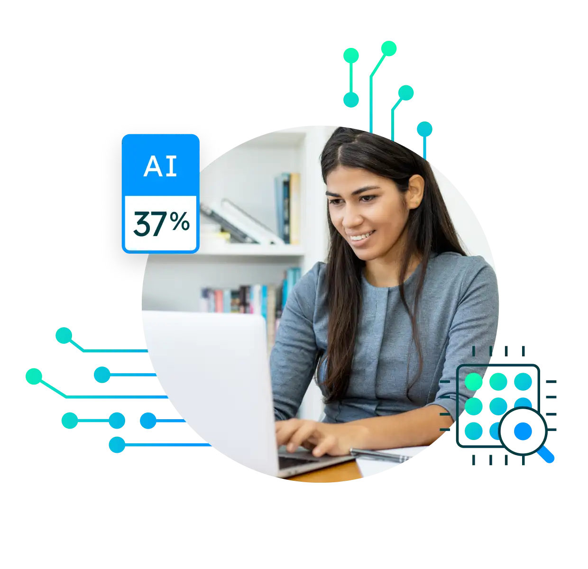
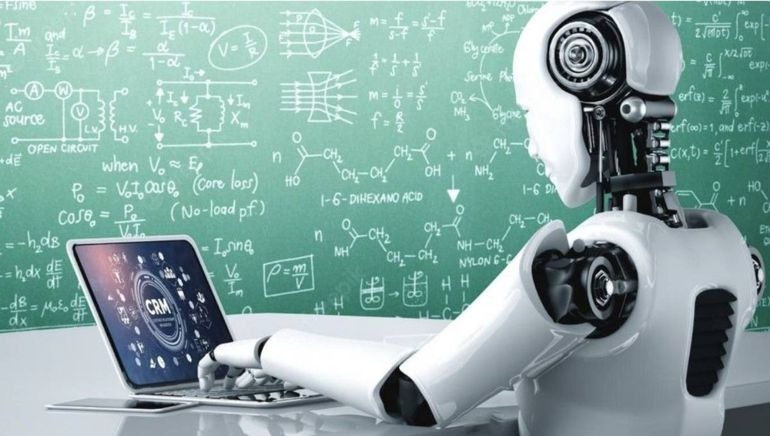

La IA en la educación desde el punto de vista de algunos docentes
En el mundo actual, la inteligencia artificial (IA) ha adquirido una relevancia sin precedentes, revolucionando múltiples sectores y ofreciendo soluciones innovadoras a problemas complejos. En el ámbito educativo, la IA promete transformar la manera en que enseñamos y aprendemos, proporcionando herramientas avanzadas que pueden personalizar y mejorar la experiencia educativa. Sin embargo, esto nos lleva a una pregunta fundamental: ¿Cómo puede la IA fortalecer las teorías del aprendizaje sin reemplazar el papel del docente? Esta cuestión es crucial, y si bien es cierto que la IA ofrece un potencial inmenso para transformar las prácticas pedagógicas, es fundamental comprender que esta tecnología debe ser vista como un complemento, y no como un sustituto, del papel del docente. La inteligencia artificial tiene el potencial de transformar la educación al complementar y potenciar las diferentes teorías del aprendizaje, tales como el conductismo, el cognitivismo, el constructivismo, el constructivismo social y el conectivismo. Este ensayo explorará cómo la IA puede integrarse de manera ética en el ámbito educativo, priorizando siempre el papel del docente como guía y facilitador del aprendizaje.
El constructivismo y el constructivismo social también encuentran en la IA un aliado valioso. Plataformas de aprendizaje adaptativo y entornos virtuales permiten a los estudiantes construir activamente su propio conocimiento a través de la exploración y la colaboración. Sin embargo, es el docente quien debe fomentar la autonomía de los estudiantes, estimular el pensamiento crítico y promover la interacción social.
En la era del conectivismo, la IA puede ayudar a los estudiantes a navegar por la inmensa cantidad de información disponible en línea. Al recomendar recursos relevantes y conectar a los estudiantes con expertos y comunidades de aprendizaje, la IA facilita la construcción de redes de conocimiento. No obstante, es el docente quien debe enseñar a los estudiantes a evaluar la información de manera crítica y a desarrollar habilidades de comunicación efectiva.
Ante estas posibilidades y oportunidades que nos permite la IA es fundamental que los docentes nos adaptemos a esta nueva realidad y encontremos formas de integrar la IA en nuestras prácticas pedagógicas. De esta manera, estaremos formando estudiantes críticos, creativos y preparados para enfrentar los desafíos del futuro. A su vez el docente debe desempeñar un papel protagónico en este proceso, diseñando experiencias de aprendizaje significativas, seleccionando las herramientas tecnológicas adecuadas y brindando el apoyo necesario a los estudiantes. La IA y el docente no son rivales, sino colaboradores que, trabajando juntos, pueden transformar la educación y preparar a los estudiantes para los desafíos del siglo XXI.
Nuestro enemigo a combatir no es la Inteligencia Artificial
Los estudiantes de hoy se enfrentarán a un futuro laboral donde la IA será una herramienta omnipresente. Prohibir su uso en el entorno escolar es como preparar a los jóvenes para una realidad que ya no existe, por lo tanto lo más sensato sería tratar de aggiornarnos como docentes y buscar su implementación independientemente de las teorías de aprendizaje con la cuál estemos más familiarizados.
Siguiendo las premisas de teorías como el conductismo, la IA puede optimizar los procesos de enseñanza-aprendizaje a través de sistemas de tutoría inteligente. Estos sistemas, al proporcionar retroalimentación inmediata y personalizada, refuerzan los comportamientos deseados y aceleran la adquisición de habilidades. Sin embargo, es el docente quien debe diseñar estas experiencias de aprendizaje, seleccionando los contenidos y estableciendo los criterios de evaluación.
El cognitivismo, por su parte, se beneficia de la capacidad de la IA para modelar procesos mentales complejos. Herramientas como simulaciones y visualizaciones permiten a los estudiantes comprender conceptos abstractos y desarrollar habilidades de resolución de problemas. No obstante, es el docente quien debe guiar a los estudiantes en la exploración de estos modelos y ayudarlos a conectar los conocimientos adquiridos con el mundo real.
La integración de las tecnologías en la educación es un hecho innegable. Plataformas virtuales, aplicaciones interactivas y herramientas de aprendizaje personalizado se han convertido en protagonistas indiscutibles de los entornos educativos. No obstante, es necesario cuestionar si esta incorporación tecnológica ha ido acompañada de una verdadera innovación pedagógica y si se hacen las inversiones necesarias en América Latina y el Caribe en este sentido. Como expertos en informática, consideramos que es fundamental reflexionar sobre el papel de las EdTech y cómo podemos aprovecharlas para superar los límites de la enseñanza tradicional. Pero antes de ello es muy importante contextualizar la región a la que hacemos referencia en esta columna, ALC (América Latina y el Caribe).
América Latina y el Caribe es una región caracterizada por su diversidad cultural y socioeconómica, pero también por profundas desigualdades y falta de oportunidades. Estas desigualdades se manifiestan en múltiples dimensiones, incluyendo el acceso a la educación y a las tecnologías. En muchas áreas rurales y comunidades vulnerables, el acceso a internet y a dispositivos tecnológicos sigue siendo limitado, lo que perpetúa la brecha educativa y tecnológica.
Además, la calidad de la educación varía significativamente entre los países y dentro de ellos, afectando de manera desigual a los estudiantes de entornos desfavorecidos. La falta de infraestructura adecuada, la escasez de recursos educativos y la insuficiente formación de los docentes son algunos de los desafíos que enfrentan estos sistemas educativos.
Una IA educativa que respete y potencie la autonomía, creatividad y colaboración de los estudiantes
En primer lugar, una IA educativa debe respetar la autonomía de los estudiantes. Esto implica diseñar sistemas que no sean meros transmisores de información, sino que fomenten la exploración, la experimentación y la toma de decisiones autónomas. La IA debe convertirse en una herramienta que acompañe al estudiante en su proceso de aprendizaje, adaptándose a sus necesidades y ritmos individuales, sin adoctrinar o coartar su libertad de pensamiento.
En segundo lugar, la IA educativa debe potenciar la creatividad. La creatividad es una habilidad esencial en el siglo XXI, y la IA puede desempeñar un papel fundamental en su desarrollo. Al proporcionar herramientas y entornos que estimulen la imaginación y la generación de ideas originales, la IA puede ayudar a los estudiantes a desarrollar su potencial creativo.
En tercer lugar, la IA educativa debe fomentar la colaboración. El aprendizaje es un proceso social, y la colaboración es una habilidad esencial en el mundo laboral. La IA puede facilitar la interacción entre estudiantes, creando espacios virtuales donde puedan trabajar juntos en proyectos y compartir conocimientos.
¿Cómo sería la IA educativa que rechazamos?
Nuestro aliado, la IA, debe estar a la altura y no simplemente facilitar nuestro trabajo. Es muy importante como docentes poder reconocer algunos vicios que podrían tener las IA para no caer en la idea falaz de que todo lo novedoso es mejor porque tenemos la misma educación que hace más de 100 años. A continuación hay una lista de posibles malas prácticas que debemos saber identificar a la hora de usar una IA como complemento de nuestra labor docente:
-
Una IA que imponga un ritmo de aprendizaje único para todos los estudiantes:
Supongamos un sistema de tutoría virtual que, al analizar los datos de rendimiento de un estudiante, determina que está avanzando a un ritmo más lento que el promedio. En lugar de ofrecer recursos adicionales o actividades más desafiantes para estimular su aprendizaje, el sistema simplemente bloquea el acceso a nuevos contenidos hasta que el estudiante haya completado las tareas pendientes al ritmo establecido.
-
Una IA que limite la exploración y la experimentación:
Imaginemos un entorno de aprendizaje virtual diseñado para enseñar matemáticas que limite las opciones de los estudiantes a un único método de resolución de problemas. Si el estudiante intenta abordar un problema de una manera diferente a la preestablecida por el sistema, este lo marcaría como incorrecto y le obligaría a seguir el camino indicado.
-
Una IA que ignore las preferencias y estilos de aprendizaje individuales.
Supongamos un sistema de aprendizaje adaptativo que, en lugar de ofrecer una variedad de formatos de contenido (texto, video, audio, etc.), solo presenta la información en un formato predefinido. Si un estudiante aprende mejor visualizando conceptos, pero el sistema sólo ofrece textos, se estaría limitando su capacidad de comprensión.
-
Una IA que evalúa a los estudiantes de manera excesivamente cuantitativa.
Si un sistema evalúa constantemente a los estudiantes en función de su rendimiento en pruebas objetivas e ignora otros aspectos importantes del aprendizaje, como la creatividad, la colaboración y el pensamiento crítico. Esto podría generar un ambiente de aprendizaje estresante y competitivo, donde los estudiantes se enfoquen únicamente en obtener buenas calificaciones.
Estos ejemplos ilustran cómo una IA educativa, si no se diseña y utiliza de manera cuidadosa, podría limitar la autonomía de los estudiantes y coartar su capacidad para aprender de manera significativa.
Es importante destacar que el objetivo de la IA educativa no es reemplazar al docente, sino complementarlo. La IA puede proporcionar herramientas valiosas para personalizar el aprendizaje y mejorar la eficiencia, pero es fundamental que el docente desempeñe un papel activo en el diseño de las experiencias de aprendizaje y en la evaluación del progreso de los estudiantes.
Para evitar estos problemas, es necesario que la IA educativa:
-
Sea flexible y adaptable
Debe permitir a los estudiantes explorar diferentes enfoques y tomar decisiones sobre su propio aprendizaje.
-
Fomente la creatividad
Debe proporcionar herramientas que estimulen la imaginación y la generación de ideas originales.
-
Promueva la colaboración
Debe facilitar la interacción entre estudiantes y fomentar el trabajo en equipo.
-
Respete la diversidad
Debe adaptarse a las necesidades y estilos de aprendizaje de todos los estudiantes.
-
Sea transparente y explicable
Los algoritmos de la IA deben ser comprensibles para los estudiantes y los docentes, de manera que se pueda evaluar su funcionamiento y tomar decisiones informadas sobre su uso.
En resumen, la inteligencia artificial tiene el potencial de transformar la educación al complementar y potenciar las diferentes teorías del aprendizaje. Sin embargo, es fundamental que esta tecnología se utilice de manera ética y responsable, siempre bajo la guía del docente. La IA debe ser vista como una herramienta que respeta y potencia la autonomía, creatividad y colaboración de los estudiantes, adaptándose a sus necesidades individuales y promoviendo un aprendizaje significativo. Al integrar la IA en nuestras prácticas pedagógicas, los docentes podemos preparar a los estudiantes para enfrentar los desafíos del siglo XXI, asegurando que se conviertan en individuos críticos, creativos y colaborativos. En este proceso, el papel del docente sigue siendo insustituible, diseñando experiencias de aprendizaje significativas y brindando el apoyo necesario para que cada estudiante alcance su máximo potencial.